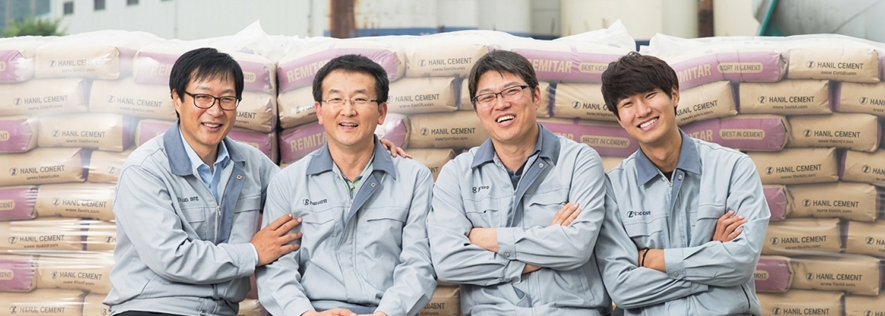

인재채용
인재채용
> 인재채용 > 인재상
Our People인재상
한일시멘트가 함께하고 싶은 사람들입니다
창의적이고 도전적인 사람
남을 배려하며 조화를 이룰 줄 아는 사람
열린 마음으로 다양성을 인정하고 서로를 존중하며 고객의 입장에서 생각합니다. 사회적 규범을 준수하고 정당한 방법으로 경쟁하며 원칙에 따라 일관성 있게 행동하는 사람, 바로 한일시멘트가 필요로 하는 사람들입니다.

한일시멘트가 추구하는 3가지 인재상
-
첫째
"젊음, 그 열정으로!"
젊음의 진취적 기상과 의욕으로 21세기를 주도할
창의력이 뛰어난 인재를 추구합니다. -
둘째
"목표를 향한 인재"
공동의 목표를 추구하며 여럿을 생각하고
정성을 다하는 인재를 추구합니다. -
셋째
"진실한 마음으로!"
진실한 마음으로 상대방을 이해하며
신뢰감을 주는 인재를 추구합니다.